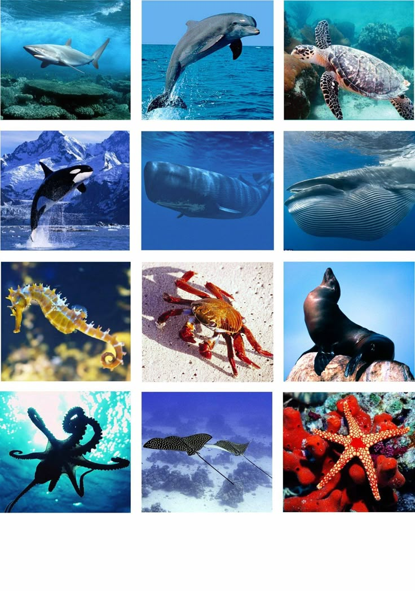
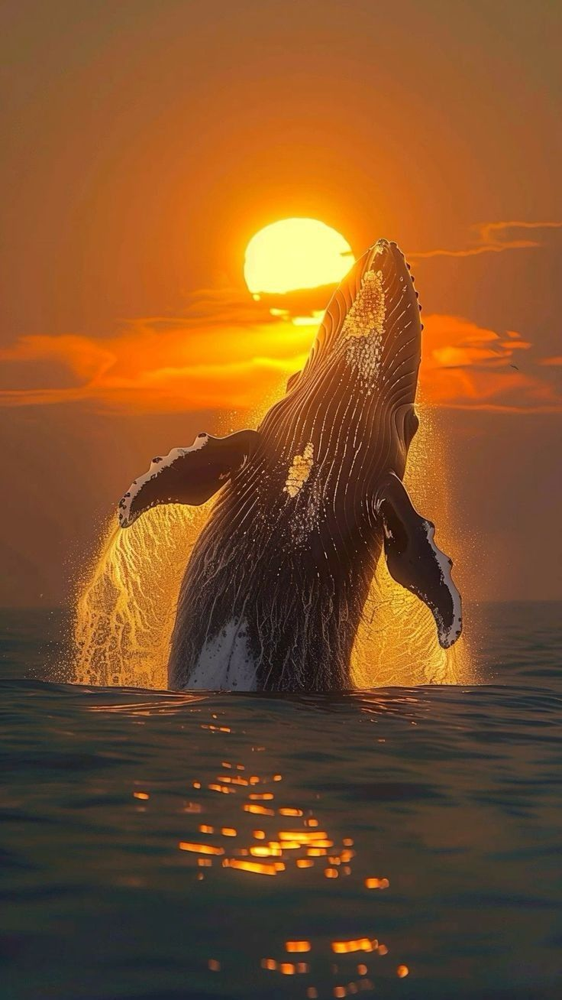
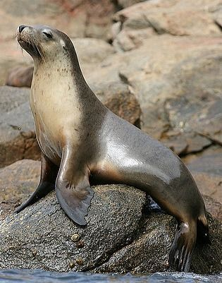
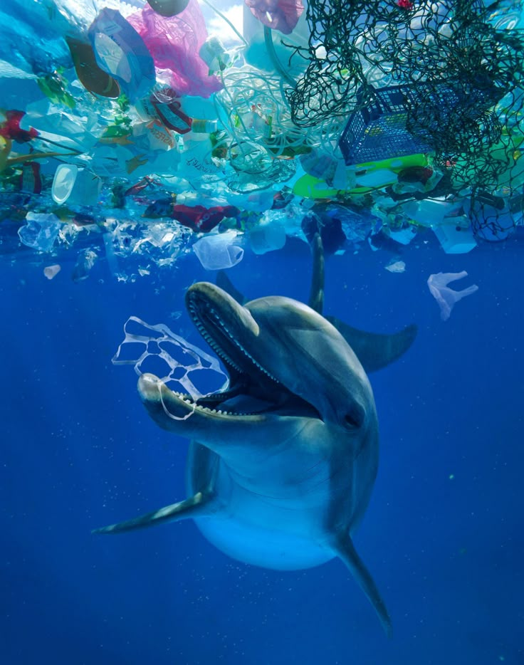
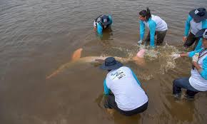
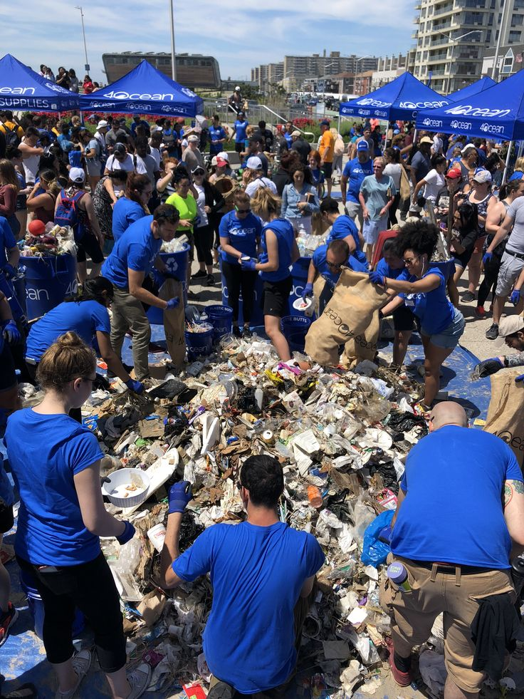

Marine Mammals: Guardians of Our Oceans
Introduction to Marine Mammals
Marine mammals are a diverse group of approximately 130 species that rely on the ocean for food and habitat. They include whales, dolphins, porpoises, seals, sea lions, walruses, sea otters, polar bears, dugongs, and manatees etc. All of them breathe air, give birth to live young, produce milk, maintain a high body temperature, and have hair (though sometimes sparse).
These remarkable creatures have evolved specialized adaptations for life in aquatic environments, such as streamlined bodies, specialized limbs for swimming, and the ability to hold their breath for extended periods. Several marine mammals are also known to show exceptional intellectual abilities along with sociological skills as well as vocal and behavioral communication abilities.Different sounds along with behavioral signals let them communicate with each other.

Did You Know?
The blue whale is the largest animal known to have ever existed, reaching lengths of up to 30 meters (98 feet) and weights of up to 173 tonnes (190 short tons). Its heart alone is the size of a small car!
Key Marine Mammal Species
Cetaceans: Whales, Dolphins, and Porpoises

Cetaceans are fully aquatic mammals divided into two suborders: baleen whales (Mysticeti) and toothed whales (Odontoceti). Baleen whales, like the humpback and blue whale, filter massive amounts of krill and small fish through their baleen plates. Toothed whales, including dolphins, porpoises, and sperm whales, have teeth and typically hunt larger prey.
These marine giants are known for their complex communication systems, including the hauntingly beautiful songs of humpback whales and the sophisticated echolocation abilities of dolphins. Packs or social groups of dozens of cetacean species show remarkable abilities in problem-solving and maintain close social bonds with mates and family members.
Pinnipeds: Seals, Sea Lions, and Walruses

Pinnipeds are semi-aquatic marine mammals characterized by their fin-like limbs. They spend significant time both in water and on land, particularly when breeding and molting. The three families of pinnipeds are:
- Phocidae (true seals): Lack external ear flaps and move awkwardly on land by flopping on their bellies.
- Otariidae (eared seals): Include sea lions and fur seals that have external ear flaps and can rotate their rear flippers to walk on land.
- Odobenidae (walruses): Recognized by their distinctive tusks and whiskers, adapted for finding mollusks on the ocean floor.
Sea Otters and Polar Bears
While most marine mammals evolved from land animals that returned to the sea, sea otters and polar bears represent more recent adaptations to marine life. Sea otters rarely come ashore, spending most of their time floating on their backs. They're known for using tools (rocks) to break open shellfish and for having the densest fur of any mammal.
Polar bears, meanwhile, are considered marine mammals because they spend much of their lives on sea ice, hunting seals and other prey. They're excellent swimmers, with water-repellent fur and partially webbed front paws.
Threats & Challenges

Marine mammals face numerous threats in today's rapidly changing oceans:
Climate Change
Rising ocean temperatures and melting sea ice are dramatically altering marine habitats. Polar species like polar bears are losing hunting grounds, while changing water temperatures disrupt migration patterns and food availability for many cetaceans.
Ocean Pollution
Plastic debris, chemical runoff, oil spills, and noise pollution all pose significant dangers to marine mammals. Large whales can become entangled in abandoned fishing gear, while smaller species often ingest plastic particles, causing internal injuries and starvation.
Overfishing
The shortage of fish resources creates negative effects on marine mammal populations that use fish as their dietary source. Marine mammal populations experience population decrease coupled with reproductive failure because of commercial fishing competition for food which results in nutritional stress.
Critical Threat
Bycatch—the accidental capture of marine mammals in fishing gear—kills more than 300,000 whales, dolphins, and porpoises annually, making it one of the most significant threats to cetacean populations worldwide.
Habitat Destruction
Coastal development, dredging, and oil and gas exploration destroy critical habitats like mangroves, seagrass beds, and coral reefs that many marine mammals depend on for feeding, breeding, and raising their young.
Conservation Efforts

Numerous international agreements and organizations work to protect marine mammals, including:
- The International Whaling Commission (IWC): Established in 1946 to regulate whaling and conserve whale stocks.
- CITES (Convention on International Trade in Endangered Species): Restricts international trade in products derived from endangered marine mammals.
- Marine Protected Areas (MPAs): Designated zones where human activity is limited to protect marine ecosystems and wildlife.
Research and Monitoring
Scientists use various techniques to study and monitor marine mammal populations, including:
- Acoustic monitoring to track cetacean movements and communication
- Satellite tagging to follow migration patterns
- Photo identification to recognize and track individuals
- Population surveys to assess species abundance and distribution
Rehabilitation and Rescue
Marine mammal rehabilitation centers around the world rescue, treat, and release injured or stranded animals. These efforts not only save individual animals but also provide valuable information about threats facing wild populations.
How You Can Help

Everyone can contribute to marine mammal conservation through simple everyday actions:
Reduce Plastic Use
Minimize single-use plastics by using reusable bags, bottles, and containers. Properly dispose of waste and participate in beach or river cleanups to prevent plastic from entering the ocean.
Make Sustainable Seafood Choices
Choose seafood from sustainably managed fisheries that minimize bycatch and environmental impact. Look for certification labels like the Marine Stewardship Council (MSC) or consult seafood guides from reputable conservation organizations.
Support Conservation Organizations
Donate to or volunteer with organizations dedicated to marine mammal protection and ocean conservation. Your time, money, and skills can make a real difference in conservation efforts worldwide.
Reduce Your Carbon Footprint
Climate change affects marine mammals by altering ocean temperatures, chemistry, and food webs. Reducing energy consumption, choosing renewable energy sources, and advocating for climate action all help protect marine mammal habitats.
Take Action Today
Visit our Volunteer page to discover opportunities to participate in marine conservation projects in your area, including beach cleanups, public education initiatives, and citizen science programs.